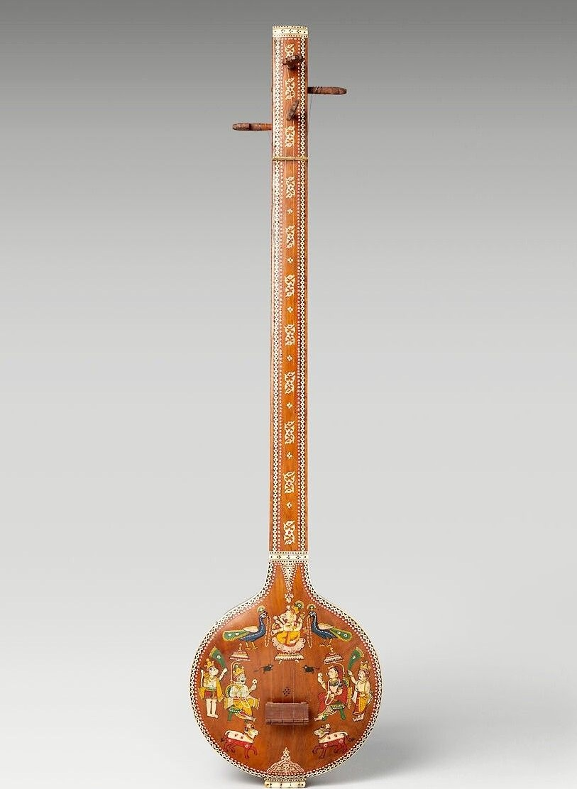

Tambur
Tanım ve Genel Özellikler
Tambur, Türk klasik müziğinin en önemli telli çalgılarından biridir. Uzun saplı, perdeli ve mızrapla çalınır. Derin ve zarif tınısı ile makam müziğinin en güçlü ifade araçlarındandır.

Tarihsel Gelişimi
Tamburun kökeni Orta Asya’ya dayanır. Osmanlı saray müziğinde gelişmiş, Tanburi Cemil Bey gibi ustalarla zirveye ulaşmıştır.
